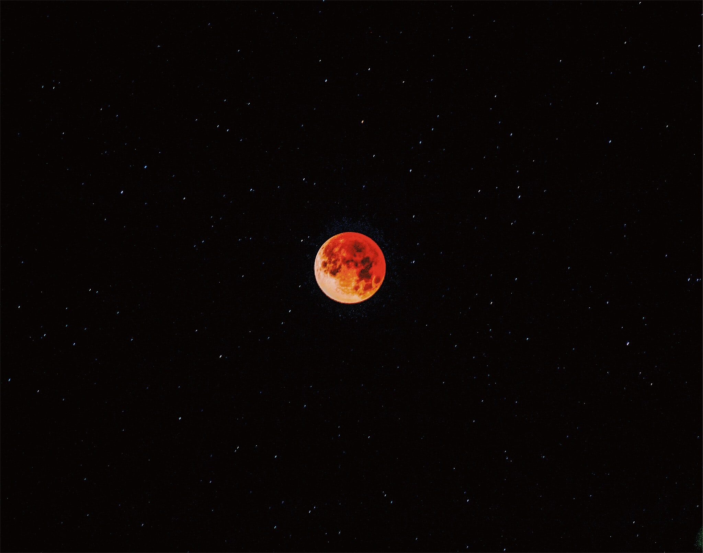

- HTML
- CSS
- JavaScript
- minjjjjjj
- jjjjjuuuu
- kimkimkim
Singapore은 어느나라 인가요?
Singapore (/ˈsɪŋ(ɡ)əpɔːr/ (About this soundlisten) ), officially the Republic of Singapore, is a sovereign island city-state in maritime Southeast Asia.
It lies about one degree of latitude (137 kilometres or 85 miles) north of the equator, off the southern tip of the Malay Peninsula, bordering the Straits of Malacca to the west, the Riau Islands (Indonesia) to the south, and the South China Sea to the east.

The country's territory is composed of one main island, 63 satellite islands and islets, and one outlying islet, the combined area of which has increased by 25% since the country's independence as a result of extensive land reclamation projects.
It has the second greatest population density in the world. The country has almost 5.7 million residents, 61% (3.4 million) of whom are Singaporean citizens.
There are four official languages of Singapore: English, Malay, Chinese and Tamil, with English being the lingua franca. Multiracialism is enshrined in the constitution, and continues to shape national policies in education, housing, and politics.